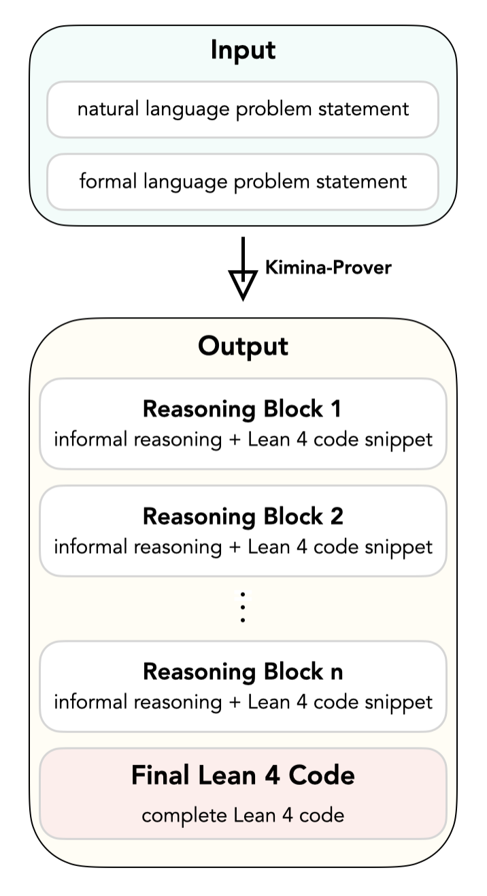
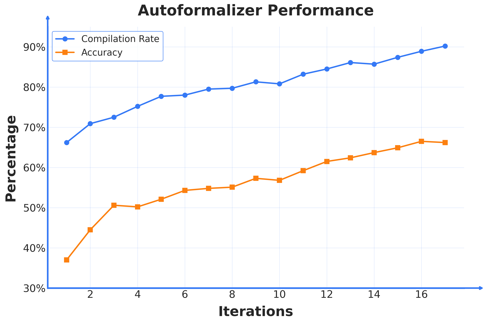
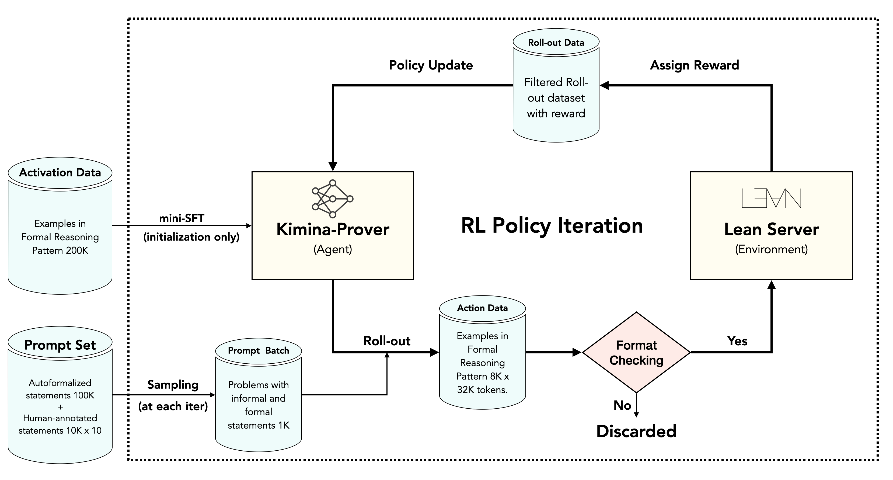
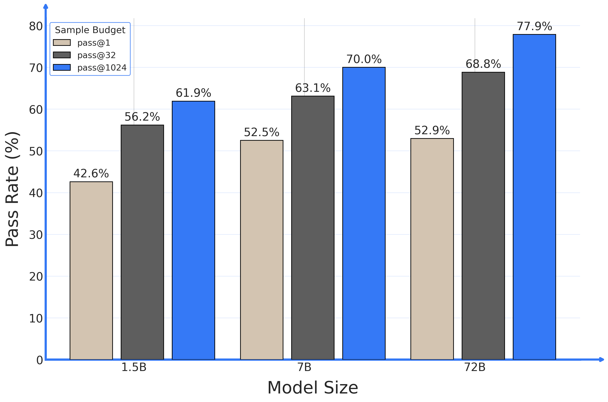
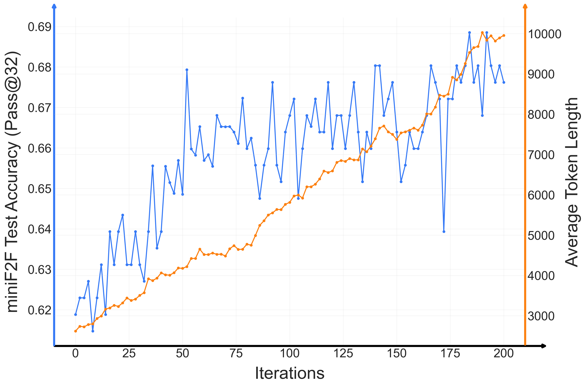
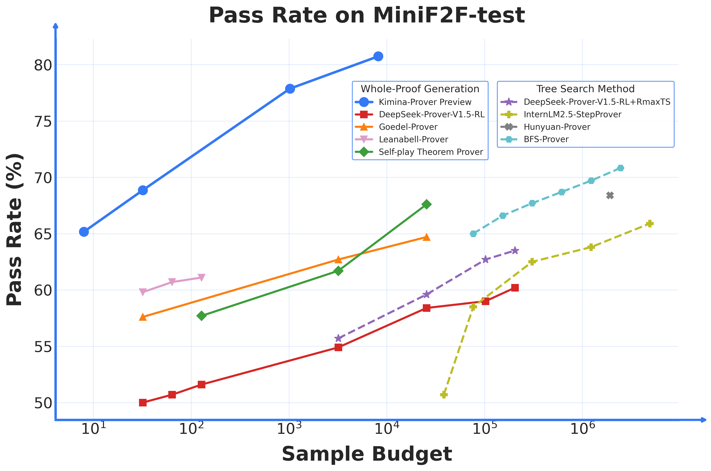

Kimina-Prover Preview: Towards Large Formal Reasoning Models with Reinforcement Learning
一句话：以往的神经定理证明器要靠外挂的树搜索算法（BFS / MCTS）在证明空间里硬搜，又慢又复杂，还基本不随模型变大而变强。本文换了个思路——用大规模强化学习，让一个 72B 大模型学会一种「形式推理范式」：在 <think> 里边用自然语言想、边写 Lean 4 代码片段，最后拼成完整证明。它把搜索内化进自己的推理，在 miniF2F 上拿到 80.7% (pass@8192) 的新 SOTA，并第一次展现出「越大越强」的规模效应。
本页基于已抓取的 arXiv 原文（2504.11354v1）正文、表格与全部原始图表构建。术语首次出现时给出英文原词，便于对照原文。
先说清楚舞台：形式化定理证明是在 Lean 4 这样的交互式证明助手（proof assistant）里写证明。它的好处是每一步都能被编译器机械地验证——证出来就是真证出来了，没有「看起来对」的模糊地带。这也带来一个绝佳的训练信号：证明对不对，编译器说了算，天然适合强化学习。
但要让 LLM 把 Lean 4 证明写对，有几道坎绕不过去：
本文没有罗列一长串 related work，而是聚焦几条与自己形成对比的技术路线。理解它们「卡在哪」，才能看懂 Kimina-Prover 为什么这么设计。点开每张卡片看具体做法与瓶颈：
做法：把证明看成一棵搜索树，模型在每个证明状态预测候选 tactic，由 Best-First Search 或 Monte Carlo Tree Search 根据启发式评分挑选、扩展最有希望的分支。
卡在哪：搜索组件是核心，但计算开销巨大（动辄上百万次采样）、系统复杂；价值/启发式难训。这条路受限于 scalability。
与本文关系：Kimina-Prover不外挂任何搜索，把「探索」内化进模型自己的思维链，pass@8192 即可超过它们的 pass@百万级。
做法：跳过逐步搜索，直接让模型从题面生成完整证明脚本，再交给 Lean 编译验证；失败就重采样。
卡在哪：缺乏深层、可解释的推理过程；模型只是「一口气写完」，难以在写之前规划证明草图，复杂题命中率低，需要海量采样。
与本文关系：Kimina-Prover 也是 whole-proof，但先在 <think> 里推理、规划再落笔，因此样本效率高得多。
做法：Lean-STaR 在每步 tactic 前插入非形式思考；MA-LoT 用多智能体让自然语言推理与 Lean 4 验证结构化交互。
卡在哪：它们用的是较短的 CoT，或依赖从通用推理任务迁移 + SFT 得到的模型，而非直接用 RL 训练长链形式推理。深度不够。
与本文关系：本文指出「在形式证明里直接做 RL 驱动的长链推理」此前无人验证过可行性，Kimina-Prover 是第一次。
做法：靠大规模 RL 练出长链推理，在 AIME、IMO 等比赛上 informal 解题能力很强。
卡在哪：会解题却不会形式化。o3 倾向给出 informal、无法验证的答案；Gemini 有形式推理能力但常幻觉、生成无法编译的伪证明。在 miniF2F 上 pass@32 仅 24.6% / 37.7%。
与本文关系：这正是 informal-formal 鸿沟的直接证据——Kimina-Prover（68.85%）说明专门为形式推理做 RL 是必要的。
Kimina-Prover 的训练配方（autoformalization + SFT + RL）可以拆成三根支柱，它们最终拧成一条强化学习闭环。先建立整体画面，后面几节再逐根展开。
<think> 里让自然语言推理与 Lean 4 代码片段交替出现，强制思维块里的代码片段大部分要出现在最终证明里——以此对齐 informal 直觉与 formal 代码。再用 ~20K Claude 合成数据 + Kimi k1.5 的 informal 思考数据做冷启动 SFT。
这是全文最核心的设计。难点在于：人类做数学是先在草稿纸上非形式地想思路，而 Lean 4 要求严格形式化的代码，两者之间缺乏对齐数据。Kimina-Prover 的解法是让模型在一个统一的思考格式里同时做两件事——把非形式直觉和形式代码逐块对齐。

Kimina-Prover，表示模型读入这对输入后开始生成。这个范式还有个副产品：可解释性。思维块把模型「内心戏」完整暴露出来，用户能看到它为什么这么证、卡在哪——这是搜索式证明器给不了的，也让它能当教学工具。论文给了一个完整的 running example，跟着走一遍就懂：
-- 已知等差数列第 7 项为 30、第 11 项为 60，求第 21 项。
theorem mathd_algebra_354 (a d : ℝ) (h₀ : a + 6 * d = 30) (h₁ : a + 10 * d = 60) :
a + 20 * d = 135 := by
<think> 通项 aₙ = a + (n−1)d。已知 a+6d=30、a+10d=60。 两式相减：4d = 30 ⟹ d = 15/2。 代回第一式：a + 6·(15/2) = 30 ⟹ a + 45 = 30 ⟹ a = −15。 于是 a + 20d = −15 + 20·(15/2) = −15 + 150 = 135。 现在把它形式化为 Lean 4：
-- 先解出 d have hd : d = 15 / 2 := by linarith -- 再解出 a have ha : a = -15 := by linarith [h₀, hd] </think>
theorem mathd_algebra_354 (a d : ℝ) (h₀ : a + 6 * d = 30) (h₁ : a + 10 * d = 60) :
a + 20 * d = 135 := by
have hd : d = 15 / 2 := by linarith
have ha : a = -15 := by linarith [h₀, hd]
linarith [ha, hd]
注意：思维块里出现的 have hd、have ha 等代码片段，原封不动地出现在最终证明里——这正是范式强制的 informal↔formal 对齐。
RL 是「在线」的——每一轮都要从题库里采题让模型练习。可形式问题极其稀缺，人工写 Lean 4 命题又慢又贵。于是本文专门训练了一个自动形式化模型 Kimina-Autoformalizer-7B，把自然语言题目翻译成 Lean 4 命题。这件事的难点是：没有现成的对错奖励——一个翻译出来的命题「忠不忠于原题」，编译通过并不代表语义正确。

冷启动 SFT 之后，真正让模型变强的是 RL。整条流水线是一个自我迭代的闭环：采题 → 生成证明 → Lean 编译验证 → 给奖励 → 更新策略。下面是原论文的流程图：

initialization only，它不参与后续 RL 循环。RL Policy Iteration。把这条闭环里「一轮迭代」拆开看，关键参数和动作如下。点「下一步」跟着走一遍：
<think> 推理 + 最终 Lean 4 证明）。形式 RL 的训练数据稀少、格式刚性，早期很容易出现 format collapse（格式崩溃）——负梯度把模型推向乱写。论文用两招稳住：
RL 每轮要验证成千上万个证明，验证速度直接决定能不能跑。本文用的 Numina Lean Server 基于官方 LeanREPL，靠两招提速：
用训好的 72B 模型 rollout 数据，对 Qwen2.5-Math-1.5B / 7B 做 SFT，得到 Distill-1.5B 和 Distill-7B 两个开源小模型（cosine 学习率 2×10⁻⁵，3 个 epoch）。小模型也能继承不错的形式推理能力（见实验一节）。
除了刷分，这套方法最有价值的几个发现，往往比 benchmark 数字更能说明它「为什么不一样」。
以往神经定理证明器有个尴尬：模型变大，性能却不怎么涨。Kimina-Prover 第一次打破了这一点。

pass@1、深灰 pass@32、蓝色 pass@1024。随着训练推进，模型自发学会用更长的思考去解更难的题——这是 reasoning model 的标志能力。

初始化 + RL 之后，模型自发表现出一系列没有被显式编程的人类解题行为。点开卡片看原文给的真实案例：
案例（IMO 1983 P6 不等式）：模型先后尝试对称性、Ravi 代换、因式分解恒等式等多种思路，多次碰壁后回到最初的代换方法深入分析，最终发现可化为平方和（sum of squares）而证明完成。
意义：这是「试错—回溯—精炼」的人类式探索，搜索被内化进了思维链，而非外挂算法。
案例（数论 72826：大偶数拆成两奇数积之和）：模型先试算 n=40,42,44,… 找出规律，策略性地固定 a=3，再按 n mod 6 分三类构造、逐一严格证明。
意义：「观察小例 → 形成猜想 → 严格证明」是数学家最常用的套路，模型把它自发学了出来。
对比 BFS-Prover：在同一道 IMO 1962 P2 上，Kimina-Prover 用一连串 have 语句把论证拆成有清晰目的的小步骤；而 BFS-Prover 靠逐步 tactic 搜索，很难从代码看出每步意图。
意义：体现了强大的证明草图规划能力，也让证明可读、可教学。
通用模型（o3、Gemini）能 informal 解题却无法形式化；Kimina-Prover 证明了形式数学能力可以与非形式推理互补。作者推测：学会在形式系统里推理，能反过来增强 informal 数学能力——这是一个令人兴奋的未来方向。
论文诚实地给了一个失败案例，比成绩单更能帮你判断它的边界。
theorem aime_1987_p5 (x y : ℤ) (h₀ : y^2 + 3*(x^2*y^2) = 30*x^2 + 517) :
3*(x^2*y^2) = 588 := by
-- 模型想证明 x² ≤ 4，于是只检验了 x²=9、x²=16
-- 发现它们让 y² 不是整数，就断定「只有 x² ≤ 4 可能」
have h3 : x^2 ≤ 4 := by
...
nlinarith [sq_nonneg (y:ℤ), h2] -- 这一步并不能真正关掉目标
问题所在：模型只验证了 x=±3、x=±4 会让 y 非整数，就断言更大的 x 也不可能，却没有真正排除所有更大的情形。这种不完整的分情况讨论是它当前的典型失败模式之一。
Kimina-Prover 证出了一道此前所有公开模型都没解出的题（imo_1968_p5_1）。它先陈述并花多行证明一个关键辅助引理 h2，再用 use 2*a 猜出正确答案，最后靠 h2 完成复杂推理链——展现出清晰的证明草图规划能力。
theorem imo_1968_p5_1 (a : ℝ) (f : ℝ → ℝ) (h₀ : 0 < a)
(h₁ : ∀ x, f (x + a) = 1/2 + Real.sqrt (f x - f x ^ 2)) :
∃ b > 0, ∀ x, f (x + b) = f x := by
have h2 : ∀ x, 0 ≤ f x ∧ f x ≤ 1 := by -- 先立关键辅助引理
intro x
have h1 := h₁ (x - a)
rw [show x - a + a = x by ring] at h1
...
use 2 * a -- 猜出周期 b = 2a
constructor
· linarith [h₀]
· intro x
... -- 用 h2 完成收尾
一句话：Kimina-Prover 在 miniF2F 上刷新 SOTA（80.74% pass@8192），样本效率远超树搜索方法，且大幅碾压通用推理大模型在形式证明上的表现。下面是最核心的几个数字：

| 系统 | 规模 | 采样预算 | miniF2F-test |
|---|---|---|---|
| DeepSeek-Prover-V1.5-RL + RMaxTS | 7B | 32×16×400 | 63.5% |
| InternLM2.5-StepProver | 7B | 256×32×600 | 65.9% |
| HunyuanProver + BFS | 7B | 600×8×400 | 68.4% |
| BFS-Prover（前 SOTA） | 7B | 2048×2×600 | 70.8% |
| DeepSeek-Prover-V1.5-RL（whole） | 7B | 102400 | 60.2% |
| Goedel-Prover-SFT | 7B | 25600 | 64.7% |
| Kimina-Prover-Distill-7B | 7B | 1024 | 70.8% |
| Kimina-Prover-Preview | 72B | 1 | 52.94% |
| Kimina-Prover-Preview | 72B | 32 | 68.85% |
| Kimina-Prover-Preview | 72B | 1024 | 77.87% |
| Kimina-Prover-Preview | 72B | 8192 | 80.74% |
树搜索方法的预算写成「宽×深×次数」相乘，实际采样量远大于 whole-proof 方法。Kimina-Prover 仅 pass@1 (52.94%) 就已逼近部分系统的高预算结果。
| 模型 | 预算 | miniF2F | IMO 子集 | AIME 子集 |
|---|---|---|---|---|
| OpenAI o3-mini | 32 | 24.59% | 0% | 6.67% |
| Gemini-2.5-Pro | 32 | 37.70% | 5% | 13.33% |
| Kimina-Prover | 32 | 68.85% | 20.00% | 46.67% |
| Kimina-Prover | 8192 | 80.74% | 40.00% | 86.67% |
关键反差：Gemini 2.5 与 o3-mini 用 informal 推理能解出 miniF2F 里全部 15 道 AIME 题，但几乎无法把它们形式化——这就是 informal 与 formal 之间的鸿沟。
蒸馏小模型也很能打：Distill-7B 在 pass@1024 达 70.8%（追平前 SOTA BFS-Prover），Distill-1.5B 也有 61.9%；连 pass@1 都分别有 52.5% / 42.6%。两个小模型均已开源。
作者对边界和后续方向也很坦诚（这些往往比成绩单更能帮你判断它适不适合你的场景）：
nlinarith、norm_num 等强力自动化 tactic「暴力」收尾，未来计划过滤这类输出以提升证明质量。论文给出的后续方向包括：用 Lean 编译器反馈做迭代式纠错、接入外部工具（库检索、计算引擎）来缓解生成难题。